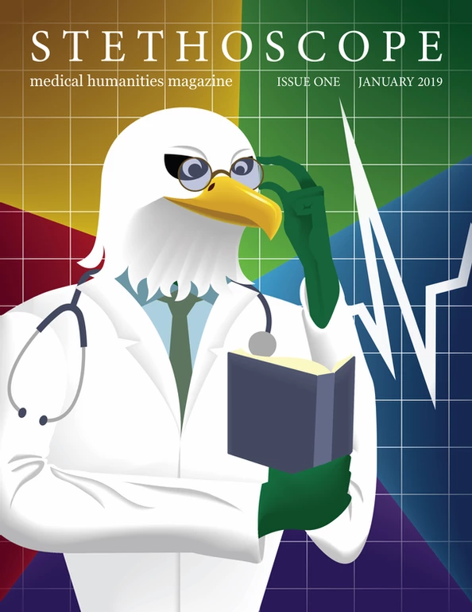

Stethoscope Throughout The Years

TAMS Medical Society's student-run medical journal — established 2019
Being published as a high schooler allows you to present your work and skills as well as establish yourself in whatever field at an early age. It also introduces you to a world of knowledge, be it through the writing skills learned through revision or the network made with mentors and collaborators. That is why we started the Stethoscope Journal in 2019.
Stethoscope is TAMS Medical Society's medical journal that compiles medical information from our student community. Ran by the Stethoscope Committee, each year, TAMS students submit articles and artwork about their passions to be published for the greater TAMS community. The committee allows students writing for the magazine to gain perspective on the latest in medical research, healthcare innovations, and interdisciplinary collaborations with medical applications. When the time of writing and revision comes to an end, the committee hosts its annual Launch Party, celebrating the work of its writers and publishers.
Stethoscope helps to bridge gaps in medical education, offering perspectives from students that can resonate with readers from diverse backgrounds. You can be a part of this effort to bring the world of medicine to everyone! If you have research, a passion, or any idea that you'd like to share in the journal, fill out the form below. We'd love to see you contribute to the world of medicine!
